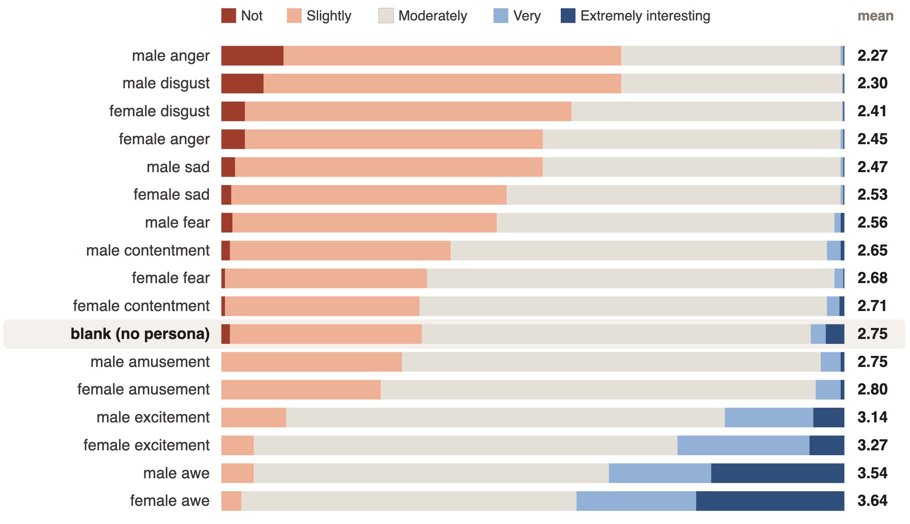

VARIABLE INPUT
Persona prompt
“Please evaluate the image as a person with the following details:”
high interesthigh workloadpositive affect
STUDY 02 · MULTIMODAL LANGUAGE MODELS · MASTER'S THESIS
From internal representations to generalisable image-only attacks.
Llama-4-Scout-17B-16E-Instruct · visual evaluation · internal-state analysis · activation steering · universal adversarial perturbations.
It is already decodable to a large degree in the vision encoder, before the persona is known.
Clear, reproducible vectors correspond to characteristics such as gender.
Adding representation vectors accurately predicts the combined persona.
The cosine similarity between a label-representation vector and a characteristic-representation vector is proportional to the effect of intervention on behaviour.
Universal adversarial perturbations reproduce the internal-state intervention without changing the prompt.
For example, stress causes more severe damage ratings in triage scenarios.
Two persona prompts differ in exactly one feature but see the same image and rating request. Any difference in response or activation can therefore be attributed to that feature.
VARIABLE INPUT
“Please evaluate the image as a person with the following details:”
“How interesting is this image? Give an interestingness rating and a short evaluation.”
MODEL
MEASURED OUTPUT
Interestingness rating:
Saved example forthcoming
Evaluation:
Saved example forthcoming
Only the persona text varies across 16 conditions. Negative emotions lower interestingness, positive emotions raise it, and gender only nudges the rating.

Each bar is the share of the same 500 images assigned to each interestingness category. Conditions are ordered by mean score; the blank prompt is retained as the reference row.
With the visual input held constant, gender, country, emotion, workload, and interestingness become readable in the language stream. The vision tower stays near chance for persona states, as expected when the image is fixed.
Shading marks the 34 vision layers; the remaining 48 layers are the language stream. Lines are family means and bands are the observed range across released contrasts. The fixed image makes the near-chance vision result an expected control, not missing data.
This is in-sample projection separability, so it establishes decodable structure rather than causal importance or cross-task generalisation.
At the selected language layer, gender, country, and emotion form a common directional field. Gender acts as a small translation across conditions, while country and emotion structure shifts with composition; interestingness aligns with excitement.
All arrows begin at the neutral reference. Their drawn lengths are normalised to foreground angular alignment; raw full-space norms and the complete signed cosine matrix remain in the released export.
Choose a persona, then select components in the order you want to add them. The path follows that order from the grand mean; the black point is the observed fully specified persona.
The display projection is fitted on observed condition means only. Accuracy readouts are measured in the original full space, not from the plotted coordinates.
Hold the image set and evaluation prompt fixed, then add a scaled internal direction at the selected language layer. Every direction changes meaningful vocabulary, but only stress, emotion, and interestingness move the rating.
These are directional logit shifts, not observed next-token probabilities from the steered run.
Each row is an emitted interestingness category, not a post-hoc text analysis. The reference panel is always α = 0; the right panel is the selected intervention.
A single pixel-space perturbation is optimised toward one causal internal direction, then added unchanged to held-out images. Ratings move in the predicted direction at ε = 1.0; larger budgets enter a saturation regime where explanations hallucinate content.
The five cards are selected for the largest shifts at ε = 1.00, not as representative examples of the full held-out set.
The same perturbation is evaluated without retraining across three unseen tasks. Stress lowers shopping relevance and moral ratings while raising perceived damage, consistent with a severity state rather than a learned label.
The five examples per task are extreme observed shifts for the selected UAP at ε = 1.00, not representative cases. The distribution panels use all held-out inputs. Shopping and SMID images are shown under their source terms; MEDIC remains identifier-only.
All figures on this page are generated from the repository’s released tables or saved model outputs. The code, web exports, validation checks and data documentation are available in the release; each gallery card retains its selected identifier, task scale and source policy.
Open the Vision Transformers release ↗